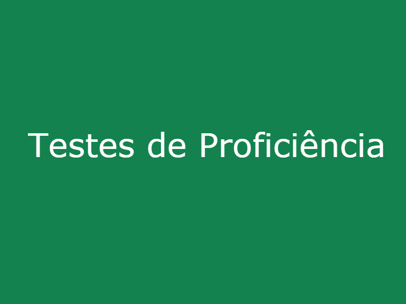

<div class="grid-container">
    <div fxLayout="row wrap" fxLayout.xs="column" fxLayout.sm="column" fxLayoutAlign="space-evenly center">
        <mat-card fxFlex="30" style="margin: 0.5%; cursor:pointer" (click)="goToTurmas()" [class.mat-elevation-z8]="onOver" matRipple
            (mouseover)="overCard()" (mouseout)="overCard()">
            <mat-card-content>
                
                <p align="justify">
                    Acesse para testes de nivelamento e exames de proficiência do programa IsF! Para saber qual instituição é credenciada para
                    aplicação do teste, acesse Centro Aplicador do Idiomas Sem Fronteiras. Para saber as regras para participação,
                    acesse o manual do candidato.
                </p>
            </mat-card-content>
        </mat-card>
        <mat-card fxFlex="30" style="margin: 0.5%">
            
            <mat-card-content>
                <p align="justify">
                    Acesse para cursos on-line do Programa Idiomas sem Fronteiras, inclusive o MEO.
                </p>
            </mat-card-content>
        </mat-card>
        <mat-card fxFlex="30" style="margin: 0.5%; cursor:pointer" class="candy-carousel"   (click)="goToTurmas()" [class.mat-elevation-z8]="onOver" matRipple
        (mouseover)="overCard()" (mouseout)="overCard()">
            <mat-card-content>
                <div align="center">
                    <h1 class="mat-h1">
                        <strong>AULAS PRESENCIAIS</strong>
                    </h1>
                </div>
            </mat-card-content>
            <mat-card-content>
                <p align="justify">
                    Acesse para concorrer a uma vaga em cursos presenciais do programa IsF! Para saber se você atende aos critérios para participar
                    do curso, acesse Posso participar?, no Portal IsF. Confirme em Universidades Parceiras se a sua instituição
                    é NucLi (Núcleo de Línguas). Realize sua inscrição e boa sorte!
                </p>
            </mat-card-content>
        </mat-card>
    </div>
</div>